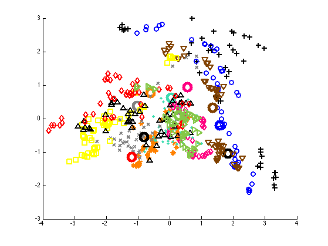
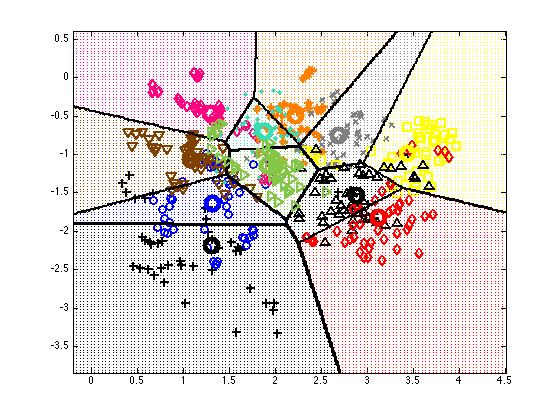

Reproduce fig 4.11 of "Elements of statistical learning" 2e
loadData('vowelTrain');
[N,D] = size(Xtrain);
C = max(ytrain);
[B,Z] = pcaPmtk(Xtrain, 2);
muC = zeros(C,D);
for c=1:C
muC(c,:) = mean(Xtrain(ytrain==c,:),1);
end
[Bmu, muC2d] = pcaPmtk(muC, 2);
lightblue = [55 155 255] / 255;
orange = [255 128 0 ] / 255;
green = [0 255 64 ] / 255;
magenta = [255 0 128 ] / 255;
green2 = [132 199 71 ] / 255;
cyan = [61 220 176 ] / 255;
yellow = [255 255 0 ] / 255;
brown = [128 64 0 ] / 255;
blue = [0 0 255 ] / 255;
red = [255 0 0 ] / 255;
black = [0 0 0 ] / 255;
gray = [128 128 128 ] / 255;
colors = {black, blue, brown, magenta, orange, cyan, gray, yellow, black, red, green2};
figure; hold on
symbols = '+ovd*.xs^d><ph';
for c=1:C
ndx = ytrain==c;
plot(Z(ndx,1), Z(ndx,2), symbols(c), 'color', colors{c},...
'linewidth', 2, 'markersize', 8);
plot(muC2d(c,1), muC2d(c,2), 'o', 'color', colors{c},...
'linewidth', 5, 'markersize', 15);
end
printPmtkFigure('fisherDiscrimVowelPCA')
[W] = fisherLdaFit(Xtrain, ytrain, 2);
W(:,1) = -W(:,1);
Xlda = Xtrain*W;
model = discrimAnalysisFit(Xlda, ytrain, 'linear');
stipple = true;
plotDecisionBoundary(Xlda, ytrain, @(X) discrimAnalysisPredict(model,X), ...
'stipple', stipple, 'colors', colors);
hold on
muC2dlda = muC*W;
for c=1:C
ndx = ytrain==c;
plot(muC2dlda(c,1), muC2dlda(c,2), 'o', 'color', colors{c},...
'linewidth', 5, 'markersize', 15);
end
printPmtkFigure('fisherDiscrimVowelLDA')
 